Rather Old School ?
Download the CV in
PDF format :
TO CONTACT ME
07 82 33 20 10
bastienprob@gmail.com
b.prob@ludus-academie.com
https://drmole1.github.io/
Bastien Prob
Game Designer and Developer


Presentation
Holder of a diploma of Video Games Developer's Bachelor, I still study at the Ludus Academie school to reach my Master. Passionnated of video games conception from I'm 6 years (society games or games in openspace), I oriented myself in creation of video games during my high school's years. So, I naturally made it my vocation. Serious Game attract me for its serious dimension and the fact it bring benefits which going beyond the classic fun.

Hardskills
Softskills
Hobbies
- Games Motors : Unity and UE4
- Mastered Languages : C#, C++, Javascript, Blueprint
- Learnt Languages : HTML, CSS, Java, Php, SQL, C
- Comprehension of video games jobs
- Project Management
- Writting of design documents
- Level Design, UI / UX, VR, Prototypes
- English , of course
- Collaborative and Flexible
- Autonomous and Organized
- Proactive and Enthusiastic
- Creative and Curious
- Analytic
- Adaptative
- Writting (Novel, Poems, Fanfictions ...)
- Music (Piano, Ukulele, Irish Flute ...)
- Sport (Musculation and Natation)
- Culture and Blindtests
- Reading (a lot of fantasy)
- Ex riffle's shooter (8 years)
Professionnal Experiences
Escape Game Designer – 2021
6 months

Locks Adventure, Schweighouse-sur-Moder
Game Developer for a Mobile Advergame – 2020
3 months

Atheo Ingenierie, Strasbourg
Game Developer for a VR Game : CAVE-DOME – 2019/2020
8 months

Pixel Museum, Strasbourg
Logistics Order Picker – 2018
3 months

Décathlon, Wittenheim
SteamBall


Steam Ball is a VR arcade game (using CAVE and DOME technologies), which has been sponsored by the Pixel Museum in Schiltigheim. The goal was to create advertising for the video games museum to propose an unic experience to visitors, so that improve attendance of the museum. A video which shows the game is available here .


PacHuman
 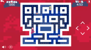
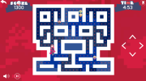

PacHuman is an advergame realized, with SCRUM method, for the society Atheo Ingenierie. The game resumes values of the company to renew PacMan Game. I worked on AI programming, project documents writting, tasks management for the dev team and reports and profesionnals exchanges with clients and graphist. The game was carried on severals platforms : web, Android and IOS.
L'Epreuve de L'Ombre
L'Epreuve de l'Ombre is a City Escape Game scenario playable in Haguenau. Players embody thieves testing their skills to steal. Spinning, discretion, falsification, lock picking ... are a part of riddles. Designed during my traineeship of 6 months at Locks Adventure : https://locksadventure.fr/nos-missions
La Gloire des Vikings

La Gloire des Vikings is a Escape Game scenario to make at home. I worked entierely on the project, since the pitch of the theme, until the organization of playtests. I produced the prototypes with cardboard and I designed stories and riddles. Designed during my traineeship of 6 months at Locks Adventure : https://locksadventure.fr/nos-missions
Student Projects Realized
From most recent to oldest
EgoManiac
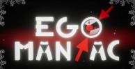

It's my best project since the beginning ! More of 650 hours of development using Unity to produce this non-euclidian enigmas game based on the theme of XXI century's narcissism. I work on all aspects of the game : programming, GD documentation and DA. French youtubers like Bob Lennon or E-Penser tested the game during a convention. A trailer is available here .

The Sweety Gummy
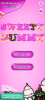 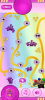
It's a game developed during 3 months using Unity, a sort of mix between Candy Crush and a brick-breaker. I uploaded this juicy colorful mobile game on Google Store. I worked hardly on UI/UX because I wanted to master these skills domains. More of 50 levels are available with innovative and surprising gameplays !
Glowing Nightmare


Glowing Nightmare was a game developed during the Mix and Jam 2020 event, using Unity. I wanted to make a game mixing rail shooter gender and horror games. The result is a little ghost train where the player must shoot on targets. A presentation video is available here . The project is available here .
HoleHole!
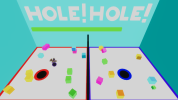 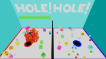
HoleHole! is one of 3 mini-games produced by a team of 9 developers, using Unity, of which I had the responsability. It's a fun and colorful multiplayer game compatible with the Switch platform. The project management and comprehension of Nintendo documentation were main challenges.


AbstractCore


AbstractCore is a survival adventure mutliplayer game using networking. Developed during the first confinement, using Unity, I used .NET framework to produce this game. Players must learn how to manage hunger, phase shift, radiations, must open doors, cure them from mortal traps and journey between dimensions.
Burst Dirty Data
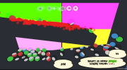

Burst Dirty Data is a Serious Game which aims to help player during learning DataBase. It trains the player to read and understand SQL requests. We developed a achievements system, bonus and scoring to encourage and motivate him during he's learning. The project is available here .
What A Wonderful World


It's a game produced with Unity, an interpretation of Candide written by Voltaire, with a DA based on Tim Burton. The player moves his character by leaning his head to the left or the right, raising him to jump or blinking to render the scene darker.
Take Place


Take Place is a mobile Serious Game made with Unity which teaches to the player what is agoraphobia and axiety in public environment. The player needs to move characters in a bus to find a better place for each of them (before they faint).
Linked Letters


Linked Letters is a mobile Serious Game produced with Unity which teaches english without make a quiz. With colors, the player moves balls with a letter and needs to throw it in a jar to form a word. It's create a bonus or a malus bubbles. If player touches these bubbles, it modifies his score and releases place.
Flop
 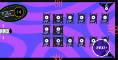
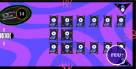

Flop is a mobile Serious Game which teaches different phases of cancer. The game proposes variations of gameplay depending of technic terms I wanted to teach. Developed using Unity, I learned a lot about this motor which is my main motor now.
Jet Outa Here


Jet Outa Here is a student project realized with UE4. It's a VR game where the player embodies a cyber-knight of space, which has to face a blackhole attracting to it some sorts of objects (asteroids, swords, shields, batteries ...). This game was playtested during the Start-To-Play 2019 by the actor Fred of the Dead.
Run to have Chance


Run to have Chance is a variant of Temple Run. Developed with Unreal Engine 4, using Blueprint, the player embodies a farmer who runs, jumps and dodges obstacles. He can reach some boosters for the next runs by buying in the shop. A scoring system has been implemented to see player's better performance.
Mission PMU


Mission PMU is a reflexion game like Mahjong with an absurd and hilarous story. Help Patrick, Michel and Ursula to escape the worst retirement home to take some fun to the nearest PMU. The game proposes a relaxing gameplay, adapated to a senior target.

Escarg'Home
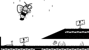

Escarg'Home is a game based on the theme of home, realized during 48 hours in Construct and during the Global Game Jam 2019. It's a platformer game where the player embodies a snail. The player needs to switch between several shells (bringing a new unic skill) to solve puzzles and beat levels.
SPRAY


Spray is my first game fully developed, with Construct 2. It contains 30 levels for a duration of 1H30, based on a juicy and colorful brick-breacker gameplay. The theme is irish pubs and it offers a festive atmosphere.
Bulletins
Bulletins of Master 2 (clic to show more)
Trimester 1
Trimester 2
Trimester 3
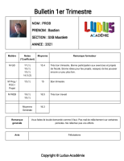.
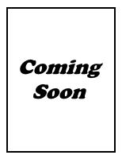